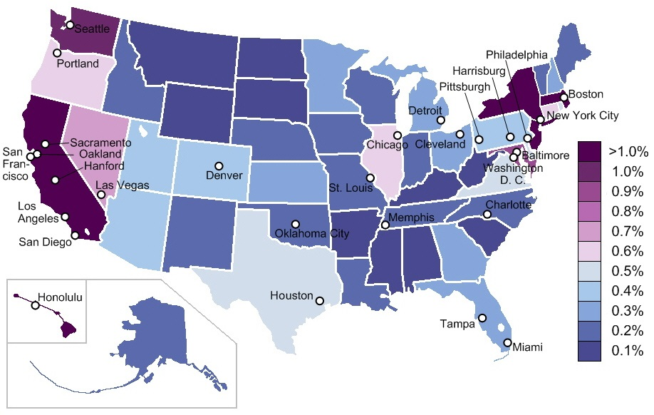
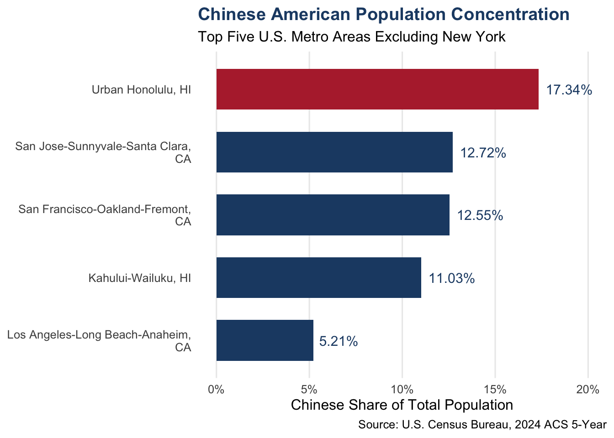
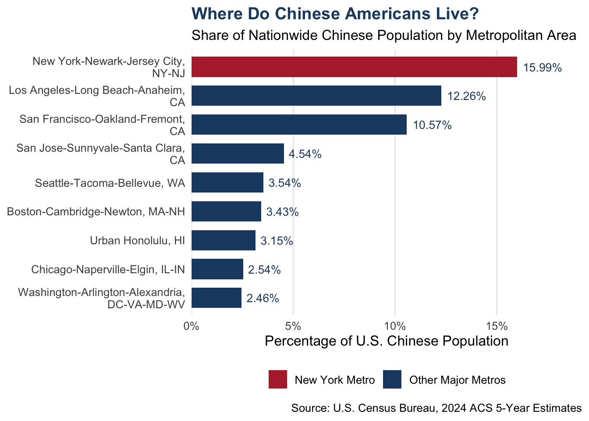
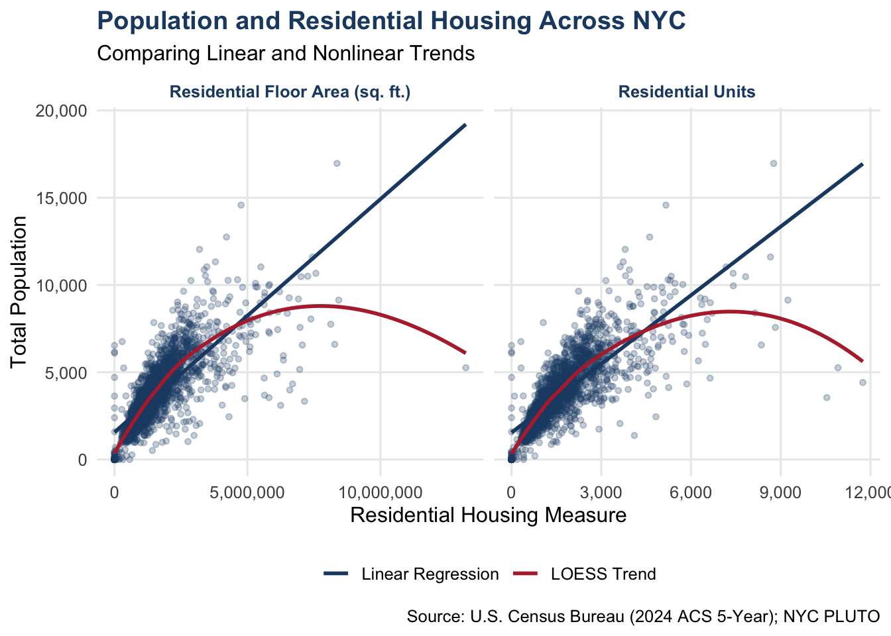
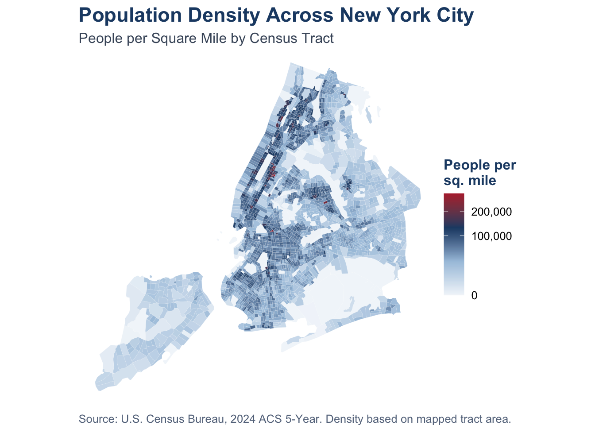
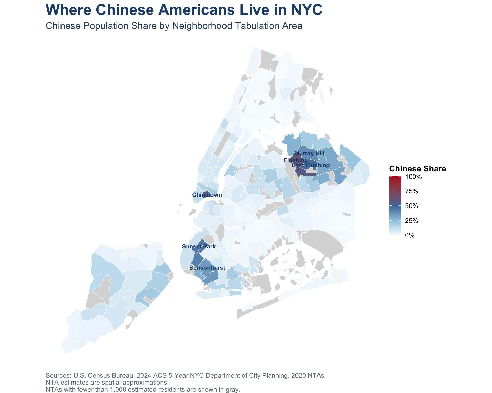

Mini-Project 03: Chinese American Communities in NYC and Across the United States
Author
Yuqin Zheng
Introduction
Arriving in the United States from China in 2019 gave me a close-up perspective on New York City’s Chinese American communities, which gradually grew into a focused research interest for this project. Growing up in Fujian, I was already familiar with local life there, and seeing many fellow Fujianese in New York City made the migration experience feel especially tangible. My father often pointed out that people come to the United States for very different reasons—some as skilled professionals, and others to earn a living while relying on exchange rate advantages and income differentials to support families back home. These contrasting pathways led me to examine how Chinese American communities are spatially organized across the United States, particularly given that the New York Metropolitan Area ranks first among analyzed metropolitan areas with 881,137 Chinese residents. At the national level, this project focuses on geographic distribution and population concentration, while in New York City it further examines residential density using PLUTO building data, treating occupational profiles and age distributions as supplementary questions that require additional data to explore. Investigating these spatial patterns offers a clearer empirical picture of the community and can help inform urban development and more effective integration within a diverse society.
Chinatown Streetscape in New York City

Chinese American Population Distribution in the United States
Task 0: Census API Key Setup
For Task 0, I requested and activated an API key from the U.S. Census Bureau and stored it locally in my .Renviron file for access via the CENSUS_API_KEY environment variable using tidycensus. For security reasons, the key itself is omitted from all published code.
Task 1: CBSA Population Breakdown
Code
#| label: cbsa-population#| message: false#| warning: false# Create the data directorydir.create("data/mp03", recursive =TRUE, showWarnings =FALSE)# Cache for 2024 ACS 5-Year datacbsa_file <-"data/mp03/cbsa_chinese_2024_acs5.gpkg"if (!file.exists(cbsa_file)) { CBSA_RAW <- tidycensus::get_acs(geography ="cbsa",variables =c(chinese ="B02018_002",total ="B01003_001" ),year =2024,survey ="acs5",geometry =TRUE,output ="wide" )# Check that Chinese population data was retrievedstopifnot(sum(!is.na(CBSA_RAW$chineseE)) >0)# Save a local copy sf::st_write( CBSA_RAW, cbsa_file,quiet =TRUE )}# Read the cached dataCBSA_RAW <- sf::st_read(cbsa_file, quiet =TRUE)# Check cached estimatesstopifnot(sum(!is.na(CBSA_RAW$chineseE)) >0)# Prepare population measuresCBSA_POPULATION <- CBSA_RAW |>mutate(chinese_population = chineseE,total_population = totalE,chinese_share =if_else( total_population >0,100* chinese_population / total_population,NA_real_ ) )
For Task 1, I retrieve data from the U.S. Census Bureau using the get_acs() function in the tidycensus R package at the Core-Based Statistical Area (CBSA) geographic level. Specifically, I extract B02018_002 (Chinese, except Taiwanese) and B01003_001 (Total Population) to compute chinese_share as (Chinese Population / Total Population) × 100, keeping in mind that ACS figures are statistical estimates rather than exact decennial census counts. Although I initially tested the 2025 ACS 1-Year estimates, all 536 CBSAs returned NA for the Chinese population variable, so I switched to the 2024 ACS 5-Year estimates to obtain complete coverage.
Task 2: NYC Tract Population Breakdown
Code
#| label: nyc-tract-population#| code-fold: true#| message: false#| warning: false# Define the five NYC countiesnyc_counties <-c("005", "047", "061", "081", "085")# Define the local cache filenyc_tract_file <-"data/mp03/nyc_tract_chinese_2024_acs5.gpkg"# Download only when the cache is missingif (!file.exists(nyc_tract_file)) { NYC_TRACTS_RAW <- tidycensus::get_acs(geography ="tract",variables =c(chinese ="B02018_002",total ="B01003_001" ),state ="NY",county = nyc_counties,year =2024,survey ="acs5",geometry =TRUE,output ="wide" )# Validate the downloaded datastopifnot(inherits(NYC_TRACTS_RAW, "sf"),nrow(NYC_TRACTS_RAW) >0,sum(!is.na(NYC_TRACTS_RAW$chineseE)) >0,all(substr(NYC_TRACTS_RAW$GEOID, 3, 5) %in% nyc_counties) )# Save population data and geographic boundaries sf::st_write( NYC_TRACTS_RAW, nyc_tract_file,quiet =TRUE )}# Read the locally cached dataNYC_TRACTS_RAW <- sf::st_read( nyc_tract_file,quiet =TRUE)# Prepare NYC tract population measuresNYC_TRACT_POPULATION <- NYC_TRACTS_RAW |>mutate(chinese_population =if_else( chineseE >=0,as.numeric(chineseE),NA_real_ ),total_population =if_else( totalE >=0,as.numeric(totalE),NA_real_ ),chinese_share =if_else( total_population >0&!is.na(chinese_population),100* chinese_population / total_population,NA_real_ ) )
For Task 2, I retrieve data from the 2024 ACS 5-Year estimates using get_acs() across all Census Tracts within New York City’s five boroughs. Consistent with Task 1, I extract B02018_002 (Chinese, except Taiwanese) and B01003_001 (Total Population), downloading spatial geometries with geometry = TRUE and caching the resulting dataset locally as a GeoPackage file. Validation confirms coverage across all five boroughs totaling 2,327 Census Tracts, with zero missing values in the Chinese population estimates.
Task 3: NYC Neighborhood Tabulation Areas
Code
#| label: load-nyc-nta#| code-fold: true#| message: false#| warning: falseload_nyc_nta <-function() {# 1. Create the data directorydir.create("data/mp03",recursive =TRUE,showWarnings =FALSE )# 2. Define cache locations nta_zip <-"data/mp03/nyc_nta_2020.zip" nta_dir <-"data/mp03/nyc_nta_2020"# NYC Open Data: 2020 NTA shapefile export nta_url <-paste0("https://data.cityofnewyork.us/api/geospatial/","9nt8-h7nd?method=export&format=Shapefile" )# 3. Check for an existing shapefile shp_files <-list.files( nta_dir,pattern ="\\.shp$",recursive =TRUE,full.names =TRUE,ignore.case =TRUE )# 4. Download and unzip only if neededif (length(shp_files) ==0) {if (!file.exists(nta_zip)) {download.file(url = nta_url,destfile = nta_zip,mode ="wb",quiet =TRUE ) }dir.create( nta_dir,recursive =TRUE,showWarnings =FALSE )unzip(nta_zip, exdir = nta_dir) shp_files <-list.files( nta_dir,pattern ="\\.shp$",recursive =TRUE,full.names =TRUE,ignore.case =TRUE ) }stopifnot(length(shp_files) >0)# 5. Read the shapefile nta <- sf::st_read( shp_files[1],quiet =TRUE )# Standardize column namesnames(nta) <-tolower(names(nta))stopifnot(all(c("nta2020","ntaname","boroname" ) %in%names(nta)) )# 6. Keep useful columns nta <- nta |> dplyr::select( nta2020, ntaname, boroname, dplyr::any_of("ntatype") )return(nta)}# Load NYC NTA dataNYC_NTA <-load_nyc_nta()
I retrieve the 2020 Neighborhood Tabulation Areas (NTAs) spatial boundary dataset from the NYC Department of City Planning — Neighborhood Tabulation Areas using download.file() and read the shapefile with sf::st_read(). Local caching is implemented to avoid repeated downloads, and validation confirms a total of 262 NTA spatial units.
Task 4: Aggregate Tract Data to the NTA Level
Code
#| label: aggregate-tract-to-nta#| code-fold: true#| message: false#| warning: false# Use a common projected CRS for spatial matchingtracts_projected <- NYC_TRACT_POPULATION |> sf::st_transform(2263) |> dplyr::select( GEOID, chinese_population, total_population )nta_projected <- NYC_NTA |> sf::st_transform(2263) |> dplyr::select(nta2020)# Step 1: Assign each tract to its largest overlapping NTATRACT_NTA_JOINED <- sf::st_join( tracts_projected, nta_projected,largest =TRUE,left =TRUE)# Step 2: Check that no tracts were duplicatedstopifnot(nrow(TRACT_NTA_JOINED) ==nrow(NYC_TRACT_POPULATION))# Step 3: Aggregate population by NTANTA_SUMMARY <- TRACT_NTA_JOINED |> sf::st_drop_geometry() |> dplyr::filter(!is.na(nta2020)) |> dplyr::group_by(nta2020) |> dplyr::summarise(chinese_population =sum(chinese_population, na.rm =TRUE),total_population =sum(total_population, na.rm =TRUE),n_tracts = dplyr::n(),.groups ="drop" )# Step 4: Reconnect population data to NTA geometriesNYC_NTA_POPULATION <- NYC_NTA |> dplyr::left_join( NTA_SUMMARY,by ="nta2020" ) |> dplyr::mutate(chinese_share = dplyr::if_else(!is.na(total_population) & total_population >0,100* chinese_population / total_population,NA_real_ ) )
I assign each Census Tract to a Neighborhood Tabulation Area (NTA) by maximum overlap area using sf::st_join() with largest = TRUE. I then aggregate Chinese and total populations by NTA and join the results to the NTA boundaries. Out of 2,327 tracts, I find 3 remain unmatched, but all three have zero population, causing no loss of Chinese population estimates. Across 262 NTAs, I match 261 to population records, leaving Hoffman & Swinburne Islands as the sole unmatched area. Because I rely on spatial-overlap aggregation, I treat these figures as an approximation rather than exact NTA population counts.
Task 5: Download PLUTO
Code
#| label: load-nyc-pluto#| code-fold: true#| message: false#| warning: falseload_nyc_pluto <-function() {# Create local cache directorydir.create("data/mp03",recursive =TRUE,showWarnings =FALSE ) pluto_file <-"data/mp03/pluto.csv" pluto_url <-paste0("https://data.cityofnewyork.us/","resource/64uk-42ks.csv" )# Keep variables needed for subsequent analyses pluto_columns <-c("bbl","bct2020","officearea","unitsres","resarea","numfloors","comarea","bldgarea","landuse","unitstotal" )# Preserve geographic identifiers as character values pluto_types <- readr::cols(.default = readr::col_double(),bbl = readr::col_character(),bct2020 = readr::col_character(),landuse = readr::col_character() )# Return cached data if availableif (file.exists(pluto_file)) {return( readr::read_csv( pluto_file,col_types = pluto_types,show_col_types =FALSE ) ) }# Obtain the total number of API records count_response <- httr2::request(pluto_url) |> httr2::req_url_query(`$select`="count(*) as total_rows" ) |> httr2::req_retry(max_tries =4) |> httr2::req_perform() expected_rows <- readr::read_csv(I(httr2::resp_body_string(count_response)),show_col_types =FALSE )$total_rows[[1]]stopifnot(expected_rows >0)# Initialize pagination page_size <-20000 offset <-0 pages <-list()# Download all pages sequentiallywhile (offset < expected_rows) { response <- httr2::request(pluto_url) |> httr2::req_url_query(`$select`=paste(pluto_columns, collapse =","),`$limit`= page_size,`$offset`= offset,`$order`=":id" ) |> httr2::req_timeout(120) |> httr2::req_retry(max_tries =4) |> httr2::req_perform() page <- readr::read_csv(I(httr2::resp_body_string(response)),col_types = pluto_types,show_col_types =FALSE )# Validate the returned pagestopifnot(all(pluto_columns %in%names(page)),nrow(page) ==min( page_size, expected_rows - offset ) ) pages[[length(pages) +1]] <- page offset <- offset +nrow(page)message("Downloaded ", offset," of ", expected_rows," records" )Sys.sleep(0.5) }# Combine all API responses pluto <- dplyr::bind_rows(pages)# Validate completenessstopifnot(nrow(pluto) == expected_rows )# Save the complete dataset locally readr::write_csv(pluto, pluto_file)return(pluto)}# Load NYC PLUTO dataNYC_PLUTO <-load_nyc_pluto()
I retrieve parcel records from NYC Department of City Planning — PLUTO using httr2 with paginated API requests ($limit and $offset at 20,000 rows per page), request pacing, automatic retries, and bind_rows() to combine pages. I cache the output locally via write_csv() to avoid repeated downloads. Validation confirms 858,284 tax lot records across 10 variables with no duplicate BBL values.
I clean trailing decimal suffixes from bbl and convert PLUTO’s seven-digit bct2020 code into an eleven-digit ACS GEOID by mapping the borough code to its Census county FIPS code and prepending New York State’s FIPS code (36). Unconvertible codes remain NA to prevent erroneous matches.
I link PLUTO tax lots to Neighborhood Tabulation Areas using the tract-to-NTA crosswalk established in Task 4 via left_join() on the standardized GEOID with relationship = “many-to-one”. This allows multiple parcels per tract without duplicating records, confirmed by matching row counts before and after the join, and prepares the dataset for residential area, residential unit, and office area analysis.
Task 6: Exploratory Data Analysis
Question 1: Which NYC Census Tract has the Most Office Floor Area?
Code
#| label: eda-q1-office-area#| code-fold: true#| message: false#| warning: false# Aggregate office floor area by Census TractOFFICE_BY_TRACT <- NYC_PLUTO |>filter(!is.na(GEOID)) |>group_by(GEOID) |>summarise(total_office_sqft =sum(officearea, na.rm =TRUE),tax_lots =n(),.groups ="drop" ) |>left_join( NYC_TRACT_POPULATION |> sf::st_drop_geometry() |>select(GEOID, NAME),by ="GEOID" ) |>filter(!is.na(NAME)) |>arrange(desc(total_office_sqft))# Identify the top 5 tractsOFFICE_TRACT_TOP5 <- OFFICE_BY_TRACT |>slice_head(n =5)# Create a publication-quality tableOFFICE_TRACT_TOP5 |>select(NAME, GEOID, total_office_sqft, tax_lots) |> gt::gt() |> gt::tab_header(title ="Top 5 NYC Census Tracts by Office Floor Area",subtitle ="NYC PLUTO Data" ) |> gt::cols_label(NAME ="Census Tract",GEOID ="GEOID",total_office_sqft ="Office Area (sq. ft.)",tax_lots ="Tax Lots" ) |> gt::fmt_number(columns =c(total_office_sqft, tax_lots),decimals =0 )
Top 5 NYC Census Tracts by Office Floor Area
NYC PLUTO Data
Census Tract
GEOID
Office Area (sq. ft.)
Tax Lots
Census Tract 9; New York County; New York
36061000900
18,354,103
102
Census Tract 13; New York County; New York
36061001300
16,889,181
85
Census Tract 113; New York County; New York
36061011300
15,679,979
103
Census Tract 94; New York County; New York
36061009400
15,433,200
92
Census Tract 7; New York County; New York
36061000700
14,608,640
67
Answer: Ranked by PLUTO data, Census Tract 9; New York County; New York has the most office floor area in New York City, with 18,354,103 sq.ft. across 102 Tax Lots.
Question 2: Which NYC NTA Has the Most Residential Units?
Answer: According to NYC PLUTO data, Upper East Side-Lenox Hill-Roosevelt Island in Manhattan has the most residential units among NYC NTAs, with 60,306 residential units across 1,363 Tax Lots.
Question 3: Population Density and Residential Space
3.1 Calculating Residential Density Measures
Code
#| label: eda-q3-density#| code-fold: true#| message: false#| warning: false# Step 1: Aggregate residential space and units by tractPLUTO_TRACT_HOUSING <- NYC_PLUTO |>filter(!is.na(GEOID)) |>group_by(GEOID) |>summarise(residential_sqft =if (all(is.na(resarea))) {NA_real_ } else {sum(resarea, na.rm =TRUE) },residential_units =if (all(is.na(unitsres))) {NA_real_ } else {sum(unitsres, na.rm =TRUE) },missing_resarea_lots =sum(is.na(resarea)),missing_units_lots =sum(is.na(unitsres)),.groups ="drop" )# Step 2: Join ACS population with PLUTO housing dataTRACT_DENSITY <- NYC_TRACT_POPULATION |> sf::st_drop_geometry() |>select(GEOID, NAME, total_population) |>left_join( PLUTO_TRACT_HOUSING,by ="GEOID",relationship ="one-to-one" ) |>mutate(people_per_sqft =if_else( total_population >0&!is.na(residential_sqft) & residential_sqft >0, total_population / residential_sqft,NA_real_ ),people_per_unit =if_else( total_population >0&!is.na(residential_units) & residential_units >0, total_population / residential_units,NA_real_ ) )# Step 3: Top 5 by population per residential square footQ3_AREA_TOP5 <- TRACT_DENSITY |>filter(is.finite(people_per_sqft)) |>arrange(desc(people_per_sqft)) |>slice_head(n =5)# Step 4: Top 5 by population per residential unitQ3_UNIT_TOP5 <- TRACT_DENSITY |>filter(is.finite(people_per_unit)) |>arrange(desc(people_per_unit)) |>slice_head(n =5)
3.2 Comparing Population Density Rankings
Code
#| label: eda-q3-rankings#| code-fold: true#| message: false#| warning: false# Top 5: Population per Residential Square FootQ3_AREA_TOP5 |>select( NAME, total_population, residential_sqft, people_per_sqft, missing_resarea_lots ) |> gt::gt() |> gt::tab_header(title ="Top 5 NYC Census Tracts by Population per Residential Square Foot" ) |> gt::cols_label(NAME ="Census Tract",total_population ="Population",residential_sqft ="Residential Area (sq. ft.)",people_per_sqft ="People per Sq. Ft.",missing_resarea_lots ="Lots Missing Area" ) |> gt::fmt_number(columns =c(total_population, residential_sqft),decimals =0 ) |> gt::fmt_number(columns = people_per_sqft,decimals =5 )
Top 5 NYC Census Tracts by Population per Residential Square Foot
Census Tract
Population
Residential Area (sq. ft.)
People per Sq. Ft.
Lots Missing Area
Census Tract 18.01; Kings County; New York
1,588
6,709
0.23670
25
Census Tract 276; Bronx County; New York
154
1,326
0.11614
3
Census Tract 93.02; Bronx County; New York
319
6,992
0.04562
109
Census Tract 179.02; Queens County; New York
69
1,880
0.03670
8
Census Tract 97.02; Richmond County; New York
40
1,232
0.03247
5
Code
# Top 5: Population per Residential UnitQ3_UNIT_TOP5 |>select( NAME, total_population, residential_units, people_per_unit, missing_units_lots ) |> gt::gt() |> gt::tab_header(title ="Top 5 NYC Census Tracts by Population per Residential Unit" ) |> gt::cols_label(NAME ="Census Tract",total_population ="Population",residential_units ="Residential Units",people_per_unit ="People per Unit",missing_units_lots ="Lots Missing Units" ) |> gt::fmt_number(columns =c(total_population, residential_units),decimals =0 ) |> gt::fmt_number(columns = people_per_unit,decimals =2 )
Top 5 NYC Census Tracts by Population per Residential Unit
Census Tract
Population
Residential Units
People per Unit
Lots Missing Units
Census Tract 18.01; Kings County; New York
1,588
2
794.00
0
Census Tract 276; Bronx County; New York
154
1
154.00
0
Census Tract 97.02; Richmond County; New York
40
1
40.00
0
Census Tract 93.02; Bronx County; New York
319
8
39.88
2
Census Tract 462.05; Bronx County; New York
3,633
100
36.33
0
Answer: Census Tract 18.01; Kings County; New York has the highest population density under both measures, with 0.23670 people per residential square foot and 794.00 people per residential unit. Switching to population per residential unit does not change the top-ranked tract, though the rest of the top five shifts. For example, Census Tract 276; Bronx County; New York stays second, while Census Tract 97.02; Richmond County; New York moves up into third. These extreme figures are also shaped by very small residential area or unit denominators and lots missing data in the tables.
Analysis & Findings: Initial density rankings can be misleading because the 2024 ACS 5-Year estimates indicate that all 1,588 residents in the original top tract, Census Tract 18.01; Kings County; New York belong to the group quarters population rather than standard housing. To address this, I subtract the estimated group quarters population from the ACS total population estimate and recalculate both residential density measures.
After this adjustment, Census Tract 276; Bronx County; New York ranks first on both metrics. Subtracting ACS estimates still leaves an estimated 154 non-group-quarters residents against only 1 PLUTO residential unit. This does not confirm that those residents actually occupy that single unit, highlighting how definition differences between ACS and PLUTO persist.
Question 4: Top Five Metropolitan Areas by Chinese Population Share
4.1 Ranking Metropolitan Areas by Chinese Population Share
Code
#| label: eda-q4-chinese-share#| code-fold: true#| message: false#| warning: false# Exclude the New York Metropolitan Areanyc_cbsa_id <-"35620"# Rank metropolitan areas by Chinese population shareQ4_METRO_TOP5 <- CBSA_POPULATION |> sf::st_drop_geometry() |>as_tibble() |>filter(str_detect(NAME, "Metro Area$"), GEOID != nyc_cbsa_id,!is.na(chinese_population), chinese_population >=0,!is.na(total_population), total_population >0 ) |>arrange(desc(chinese_share),desc(chinese_population) ) |>slice_head(n =5) |>mutate(rank =row_number())# Validate the resultsstopifnot(nrow(Q4_METRO_TOP5) ==5,all(Q4_METRO_TOP5$GEOID != nyc_cbsa_id))# Create a formatted tableQ4_METRO_TOP5 |>select( rank, NAME, chinese_population, total_population, chinese_share ) |> gt::gt() |> gt::tab_header(title ="Top 5 U.S. Metropolitan Areas by Chinese Population Share",subtitle ="Excluding New York | 2024 ACS 5-Year" ) |> gt::cols_label(rank ="Rank",NAME ="Metropolitan Area",chinese_population ="Chinese Population",total_population ="Total Population",chinese_share ="Chinese Share (%)" ) |> gt::fmt_number(columns =c(chinese_population, total_population),decimals =0 ) |> gt::fmt_number(columns = chinese_share,decimals =2 )
Top 5 U.S. Metropolitan Areas by Chinese Population Share
Excluding New York | 2024 ACS 5-Year
Rank
Metropolitan Area
Chinese Population
Total Population
Chinese Share (%)
1
Urban Honolulu, HI Metro Area
173,593
1,001,146
17.34
2
San Jose-Sunnyvale-Santa Clara, CA Metro Area
250,435
1,969,337
12.72
3
San Francisco-Oakland-Fremont, CA Metro Area
582,752
4,645,029
12.55
4
Kahului-Wailuku, HI Metro Area
18,156
164,589
11.03
5
Los Angeles-Long Beach-Anaheim, CA Metro Area
675,744
12,974,487
5.21
4.2 Visualization: Chinese Population Concentration
Code
#| label: eda-q4-bar-chart#| code-fold: true#| fig-width: 10#| fig-height: 5.5#| fig-cap: "Chinese population share across the top five non-NYC metropolitan areas, 2024 ACS 5-Year."#| message: false#| warning: falseQ4_METRO_TOP5 |>mutate(metro_label =str_remove(NAME, " Metro Area$"),metro_label =str_wrap(metro_label, width =32),highlight =if_else( rank ==1, "Highest Share", "Other Metro Areas" ) ) |>ggplot(aes(x = chinese_share,y = forcats::fct_reorder(metro_label, chinese_share),fill = highlight ) ) +geom_col(width =0.65) +geom_text(aes(label =sprintf("%.2f%%", chinese_share)),hjust =-0.15,color ="#204A73",size =4 ) +scale_fill_manual(values =c("Highest Share"="#B52B3A","Other Metro Areas"="#204A73" ),guide ="none" ) +scale_x_continuous(limits =c(0, 20),labels =function(x) paste0(x, "%") ) +labs(title ="Chinese American Population Concentration",subtitle ="Top Five U.S. Metro Areas Excluding New York",x ="Chinese Share of Total Population",y =NULL,caption ="Source: U.S. Census Bureau, 2024 ACS 5-Year" ) +theme_minimal(base_size =12) +theme(plot.title =element_text(face ="bold",color ="#204A73" ),panel.grid.major.y =element_blank(),panel.grid.minor =element_blank() )

Analysis & Findings: Excluding New York, Urban Honolulu has the highest Chinese population share among analyzed metropolitan areas at 17.34%, followed by San Jose (12.72%) and San Francisco (12.55%). All top five metropolitan areas are located in Hawaii (two) and California (three), pointing to strong regional concentration. Looking at population share alongside raw counts highlights a clear contrast: Los Angeles has far more Chinese residents (675,744) than Urban Honolulu (173,593), but they make up a much smaller share of the local population (5.21% vs. 17.34%). Having a large overall headcount does not mean a group is heavily concentrated locally.
Question 5: Ancestry Distribution in Urban Honolulu
Analysis & Findings: In Urban Honolulu, Asian alone is the largest single racial group by a wide margin, ahead of Two or More Races and White alone. Among major Asian groups in the table, Japanese residents lead with 90,209 (26.11%), followed closely by Chinese (except Taiwanese) at 70,056 (20.28%) and Filipino at 69,262 (20.05%). Moving from the metro level in Q4 to the Urban Honolulu CDP in Q5, the Chinese share goes up from 17.34% to 20.28%, which shows how changing geographic boundaries changes what you see. Also, detailed Asian group categories can overlap, so the numbers don’t split people into separate, non-overlapping buckets.
Question 6: Chinese American Population Distribution Across the United States
6.1: National and New York State Population Estimates
Code
#| label: eda-q6-national-population#| code-fold: true#| message: false#| warning: false# Cache nationwide and NY State ACS estimatesq6_file <-"data/mp03/us_ny_chinese_2024_acs5.csv"q6_variables <-c(chinese ="B02018_002",total ="B01003_001")if (!file.exists(q6_file)) {# United States US_RAW <- tidycensus::get_acs(geography ="us",variables = q6_variables,year =2024,survey ="acs5",output ="wide" ) |>mutate(scope ="United States")# New York State NY_RAW <- tidycensus::get_acs(geography ="state",state ="NY",variables = q6_variables,year =2024,survey ="acs5",output ="wide" ) |>mutate(scope ="New York State") Q6_US_NY <- dplyr::bind_rows( US_RAW, NY_RAW ) readr::write_csv(Q6_US_NY, q6_file)}# Read locally cached ACS estimatesQ6_US_NY <- readr::read_csv( q6_file,col_types = readr::cols(GEOID = readr::col_character(),.default = readr::col_guess() ),show_col_types =FALSE)# Validate national and state estimatesstopifnot(nrow(Q6_US_NY) ==2,all(!is.na(Q6_US_NY$chineseE)),all(Q6_US_NY$chineseE >0))# Nationwide Chinese population denominatorUS_CHINESE_TOTAL <- Q6_US_NY |>filter(scope =="United States") |>pull(chineseE)# New York State share of nationwide Chinese populationQ6_NY_STATE <- Q6_US_NY |>filter(scope =="New York State") |>mutate(share_of_us =100* chineseE / US_CHINESE_TOTAL )# Display the nationwide and NY State estimatesQ6_US_NY |>mutate(share_of_us =100* chineseE / US_CHINESE_TOTAL ) |>select(scope, chineseE, share_of_us) |> gt::gt() |> gt::tab_header(title ="Chinese Population: United States vs. New York State",subtitle ="2024 ACS 5-Year Estimates" ) |> gt::cols_label(scope ="Geographic Area",chineseE ="Chinese Population",share_of_us ="Share of U.S. Chinese Population (%)" ) |> gt::fmt_number(columns = chineseE,decimals =0 ) |> gt::fmt_number(columns = share_of_us,decimals =2 )
Chinese Population: United States vs. New York State
2024 ACS 5-Year Estimates
Geographic Area
Chinese Population
Share of U.S. Chinese Population (%)
United States
5,510,873
100.00
New York State
787,938
14.30
6.2 Chinese Population Across Major Metropolitan Areas
Code
#| label: eda-q6-metro-comparison#| code-fold: true#| message: false#| warning: false# Prepare large metropolitan areasQ6_MAJOR_METROS <- CBSA_POPULATION |> sf::st_drop_geometry() |>as_tibble() |>filter(str_detect(NAME, "Metro Area$"),!is.na(chinese_population),!is.na(total_population), total_population >=1000000 ) |>mutate(share_of_us =100* chinese_population / US_CHINESE_TOTAL )# New York Metropolitan AreaQ6_NYC_METRO <- Q6_MAJOR_METROS |>filter(GEOID =="35620")# Eight other major metros with largest Chinese populationsQ6_OTHER_METROS <- Q6_MAJOR_METROS |>filter(GEOID !="35620") |>arrange(desc(chinese_population)) |>slice_head(n =8)# Combine for comparisonQ6_METRO_COMPARISON <-bind_rows( Q6_NYC_METRO, Q6_OTHER_METROS) |>arrange(desc(chinese_population))# Validatestopifnot(nrow(Q6_NYC_METRO) ==1,nrow(Q6_OTHER_METROS) ==8,all(Q6_METRO_COMPARISON$share_of_us <=100))# Publication-quality tableQ6_METRO_COMPARISON |>select( NAME, chinese_population, share_of_us ) |> gt::gt() |> gt::tab_header(title ="Distribution of Chinese Americans Across Major U.S. Metros",subtitle ="Share of Nationwide Chinese Population | 2024 ACS 5-Year" ) |> gt::cols_label(NAME ="Metropolitan Area",chinese_population ="Chinese Population",share_of_us ="Share of U.S. Chinese Population (%)" ) |> gt::fmt_number(columns = chinese_population,decimals =0 ) |> gt::fmt_number(columns = share_of_us,decimals =2 )
Distribution of Chinese Americans Across Major U.S. Metros
Share of Nationwide Chinese Population | 2024 ACS 5-Year
Metropolitan Area
Chinese Population
Share of U.S. Chinese Population (%)
New York-Newark-Jersey City, NY-NJ Metro Area
881,137
15.99
Los Angeles-Long Beach-Anaheim, CA Metro Area
675,744
12.26
San Francisco-Oakland-Fremont, CA Metro Area
582,752
10.57
San Jose-Sunnyvale-Santa Clara, CA Metro Area
250,435
4.54
Seattle-Tacoma-Bellevue, WA Metro Area
194,813
3.54
Boston-Cambridge-Newton, MA-NH Metro Area
188,860
3.43
Urban Honolulu, HI Metro Area
173,593
3.15
Chicago-Naperville-Elgin, IL-IN Metro Area
140,031
2.54
Washington-Arlington-Alexandria, DC-VA-MD-WV Metro Area
135,652
2.46
6.3 Visualization: Chinese Population Distribution Across Major Metros
Code
#| label: eda-q6-metro-chart#| code-fold: true#| fig-width: 11#| fig-height: 6#| fig-cap: "Share of the nationwide Chinese (except Taiwanese) population in selected major metropolitan areas, 2024 ACS 5-Year."#| message: false#| warning: falseQ6_METRO_COMPARISON |>mutate(metro_label =str_remove(NAME, " Metro Area$"),metro_label =str_wrap(metro_label, width =32),highlight =if_else( GEOID =="35620","New York Metro","Other Major Metros" ) ) |>ggplot(aes(x = share_of_us,y = forcats::fct_reorder(metro_label, share_of_us),fill = highlight ) ) +geom_col(width =0.7) +geom_text(aes(label =sprintf("%.2f%%", share_of_us)),hjust =-0.15,color ="#204A73",size =3.5 ) +scale_fill_manual(values =c("New York Metro"="#B52B3A","Other Major Metros"="#204A73" ),name =NULL ) +scale_x_continuous(labels =function(x) paste0(x, "%"),expand =expansion(mult =c(0, 0.20)) ) +labs(title ="Where Do Chinese Americans Live?",subtitle ="Share of Nationwide Chinese Population by Metropolitan Area",x ="Percentage of U.S. Chinese Population",y =NULL,caption ="Source: U.S. Census Bureau, 2024 ACS 5-Year Estimates" ) +theme_minimal(base_size =12) +theme(plot.title =element_text(face ="bold",color ="#204A73" ),panel.grid.major.y =element_blank(),panel.grid.minor =element_blank(),legend.position ="bottom" )

Analysis & Findings： Out of an estimated 5,510,873 Chinese residents nationwide, New York State accounts for 14.30% (787,938 residents), while the New York metro area accounts for 15.99% (881,137 residents). Examining the New York metropolitan area alongside eight other major metro areas with the largest Chinese populations—rather than every metro area in the country—New York (15.99%), Los Angeles (12.26%), and San Francisco (10.57%) account for the largest share of the national population. Comparing Honolulu in Question 4 and Question 6 shows the distinction between local population concentration and the geographic distribution of the nationwide population: Honolulu ranks first in Question 4 because Chinese residents represent 17.34% of the local metro population, yet it holds only 3.15% of the nationwide Chinese population in Question 6. Whereas local share reflects how concentrated a group is within a given area, national share captures where larger population totals reside across the country.
Question 7: Population and Housing Relationships Across NYC Tracts
#| label: eda-q7-linear-statistics#| code-fold: true#| message: false#| warning: false# Measure strength of linear relationshipsQ7_STATS <- Q7_HOUSING_LONG |> dplyr::group_by(housing_measure) |> dplyr::summarise(n_tracts = dplyr::n(),correlation =cor( housing_value, total_population ),r_squared = correlation^2,zero_housing_with_population =sum( housing_value ==0& total_population >0 ),.groups ="drop" )# Display a formatted summary tableQ7_STATS |> gt::gt() |> gt::tab_header(title ="Population and Housing Relationships in NYC",subtitle ="2024 ACS 5-Year and NYC PLUTO" ) |> gt::cols_label(housing_measure ="Housing Measure",n_tracts ="Valid Tracts",correlation ="Pearson r",r_squared ="R-Squared",zero_housing_with_population ="Tracts with Population but Zero Housing Measure" ) |> gt::fmt_number(columns =c(correlation, r_squared),decimals =3 ) |> gt::fmt_number(columns =c(n_tracts, zero_housing_with_population),decimals =0 )
Population and Housing Relationships in NYC
2024 ACS 5-Year and NYC PLUTO
Housing Measure
Valid Tracts
Pearson r
R-Squared
Tracts with Population but Zero Housing Measure
Residential Floor Area (sq. ft.)
2,318
0.774
0.598
22
Residential Units
2,322
0.786
0.618
22
7.3 Visualization: Population vs. Residential Housing
Code
#| label: eda-q7-scatter-plot#| code-fold: true#| fig-width: 12#| fig-height: 5.5#| fig-cap: "Relationship between total population and residential housing across NYC census tracts."#| message: false#| warning: falseggplot( Q7_HOUSING_LONG,aes(x = housing_value,y = total_population )) +geom_point(color ="#204A73",alpha =0.25,size =1.2 ) +# Linear regression linegeom_smooth(aes(color ="Linear Regression"),method ="lm",formula = y ~ x,se =FALSE,linewidth =1 ) +# Nonlinear LOESS trendgeom_smooth(aes(color ="LOESS Trend"),method ="loess",formula = y ~ x,se =FALSE,linewidth =1,span =0.75 ) +facet_wrap(~ housing_measure,scales ="free_x",ncol =2 ) +scale_color_manual(values =c("Linear Regression"="#204A73","LOESS Trend"="#B52B3A" ),name =NULL ) +scale_x_continuous(labels = scales::label_comma() ) +scale_y_continuous(labels = scales::label_comma() ) +labs(title ="Population and Residential Housing Across NYC",subtitle ="Comparing Linear and Nonlinear Trends",x ="Residential Housing Measure",y ="Total Population",caption ="Source: U.S. Census Bureau (2024 ACS 5-Year); NYC PLUTO" ) +theme_minimal(base_size =12) +theme(plot.title =element_text(face ="bold",color ="#204A73" ),strip.text =element_text(face ="bold",color ="#204A73" ),panel.grid.minor =element_blank(),legend.position ="bottom" )

Analysis & Findings: Across NYC Census Tracts, population and housing show a clear positive, roughly linear relationship overall, though the scatter plots and LOESS curves point to added complexity. Both residential floor area (r = 0.774) and residential units (r = 0.786) correlate strongly with population, with units slightly higher. Their R-Squared values (0.598 and 0.618) show that a simple linear model captures a substantial share of population variation while leaving plenty unexplained. At higher housing levels, the LOESS curve levels off and dips below the linear fit, but sparse observations at the upper tail make over-interpreting that drop risky. Missing housing records, group quarters residents, and definition mismatches between ACS and PLUTO—including 22 tracts with positive population but zero recorded housing—also affect the results.
Question 8: NYC Neighborhoods with the Tallest Buildings
Top 10 NYC Neighborhoods with the Tallest Buildings
Maximum Recorded Floors | NYC PLUTO
Neighborhood
Borough
Maximum Floors
Lots at Maximum
Financial District-Battery Park City
Manhattan
104
1
Midtown South-Flatiron-Union Square
Manhattan
102
1
Midtown-Times Square
Manhattan
98
1
East Midtown-Turtle Bay
Manhattan
77
1
Downtown Brooklyn-DUMBO-Boerum Hill
Brooklyn
74
1
Chinatown-Two Bridges
Manhattan
72
1
Chelsea-Hudson Yards
Manhattan
71
1
Tribeca-Civic Center
Manhattan
70
1
Long Island City-Hunters Point
Queens
69
1
Queensbridge-Ravenswood-Dutch Kills
Queens
64
1
8.3 Data Quality Note: Anomalous Building Floor Count
In PLUTO, BBL 3053460017 records a floor count of 342.87 floors, which is clearly implausible for a low-rise industrial property. External building records show that this property—located at 1454 39th Street in Borough Park, Brooklyn—is a four-story storage/industrial building rather than a supertall tower. I exclude this anomalous record from the building floor rankings while keeping the raw PLUTO dataset unchanged. After removing it, Financial District-Battery Park City ranks first with 104 floors.
#| label: eda-q9-density-map#| code-fold: true#| fig-width: 10#| fig-height: 9#| fig-cap: "NYC population density by Census Tract, 2024 ACS 5-Year estimates."#| message: false#| warning: falseggplot(Q9_TRACT_DENSITY) +geom_sf(aes(fill = population_per_sqmi),color ="white",linewidth =0.03 ) +scale_fill_gradientn(colors =c("#F2F6FA","#A7C4DE","#204A73","#B52B3A" ),trans ="sqrt",labels = scales::label_comma(),na.value ="#D1D5DB",name ="People per\nsq. mile" ) +coord_sf(datum =NA) +labs(title ="Population Density Across New York City",subtitle ="People per Square Mile by Census Tract",caption =paste("Source: U.S. Census Bureau, 2024 ACS 5-Year.","Density based on mapped tract area." ) ) +theme_void(base_size =12) +theme(plot.title =element_text(face ="bold",size =17,color ="#204A73" ),plot.subtitle =element_text(size =12,color ="#475569" ),plot.caption =element_text(color ="#64748b",hjust =0 ),legend.title =element_text(face ="bold",color ="#204A73" ),legend.position ="right" )

Analysis & Findings: Census Tract 136.02; New York County; New York has the highest population density in New York City at 292,755 people per square mile, with an estimated population of 6,373 across a relatively small geographic area of about 0.02 square miles. On the map, Manhattan shows broad clusters of moderate-to-high density alongside pockets of higher density in Brooklyn, Queens, and the Bronx, whereas Staten Island stays mostly low-density. Unlike Question 3’s residential floor area measure, this metric divides population by geographic tract area, so small tracts can post very high density values, and 3 of the 2,327 tracts with zero area and zero population are set to NA.
Question 10: How Many New Yorkers Live in Primarily Commercial Areas?
10.1 Defining and Identifying Primarily Commercial NTAs
Analysis & Findings: Under a threshold of more than 50% commercial floor area, 71 NYC NTAs qualify as commercial-dominant, encompassing an estimated 446,977 residents—or 5.27% of the city’s total population—living within these neighborhoods rather than necessarily inside commercial buildings.
High commercial share does not rule out substantial residential presence: Chelsea–Hudson Yards ( 59.50% commercial share) has 62,960 estimated residents, the Financial District–Battery Park City (70.61% ) has 48,198 and even Midtown–Times Square ( 88.52% ) still has 23,035.
Sensitivity testing across 40% (86 NTAs; 1,014,526 residents, 11.96%), 50% (71 NTAs; 446,977, 5.27%), and 60% (67 NTAs; 255,115, 3.01%) shows how strongly estimates depend on the threshold chosen.
These figures are approximate because commercial share uses comarea / (comarea + resarea) rather than total building or land area, tract-to-NTA population allocation relies on spatial overlap, and missing PLUTO area values can affect classification.
Task 7: Atlas of Communities Entry
Chinese American Population Across the United States
Code
#| label: atlas-us-chinese-map#| code-fold: true#| fig-width: 12#| fig-height: 7#| fig-cap: "Estimated Chinese population across U.S. metropolitan areas, 2024 ACS 5-Year."#| message: false#| warning: false# Prepare metropolitan-area geographyQ7_US_METROS <- CBSA_POPULATION |> dplyr::filter(grepl(" Metro Area$", NAME),!is.na(chinese_population), chinese_population >=0,!is.na(total_population), total_population >0 ) |> sf::st_transform(4326)# Separate geographic regionsQ7_US_MAIN <- Q7_US_METROS |> dplyr::filter(!grepl(", (AK|HI|PR) Metro Area$", NAME) )Q7_US_HAWAII <- Q7_US_METROS |> dplyr::filter(grepl(", HI Metro Area$", NAME))Q7_US_ALASKA <- Q7_US_METROS |> dplyr::filter(grepl(", AK Metro Area$", NAME))# Common color scale for all panels# Shared color scale for all U.S. map panelsus_fill <- ggplot2::scale_fill_gradientn(colors =c("#F2F6FA","#A7C4DE","#204A73","#B52B3A" ),trans ="sqrt",limits =c(0,max(Q7_US_METROS$chinese_population, na.rm =TRUE) ),breaks =c(0, 200000, 500000, 800000),labels =c("0", "200k", "500k", "800k"),name ="Chinese Population",na.value ="#D1D5DB",guide = ggplot2::guide_colorbar(title.position ="top",title.hjust =0.5,barwidth = grid::unit(10, "cm"),barheight = grid::unit(0.45, "cm"),ticks =TRUE ))# Main continental U.S. mapus_main_map <- ggplot2::ggplot(Q7_US_MAIN) + ggplot2::geom_sf( ggplot2::aes(fill = chinese_population),color ="white",linewidth =0.08 ) + us_fill + ggplot2::coord_sf(crs = sf::st_crs(5070),datum =NA ) + ggplot2::labs(title ="Contiguous United States" ) + ggplot2::theme_void(base_size =11) + ggplot2::theme(plot.title = ggplot2::element_text(face ="bold",color ="#204A73" ),legend.position ="bottom",legend.justification ="center",legend.title = ggplot2::element_text(size =11,face ="bold",color ="#204A73" ),legend.text = ggplot2::element_text(size =9,color ="#475569" ) )# Hawaii insetus_hawaii_map <- ggplot2::ggplot(Q7_US_HAWAII) + ggplot2::geom_sf( ggplot2::aes(fill = chinese_population),color ="white",linewidth =0.12 ) + us_fill + ggplot2::coord_sf(datum =NA) + ggplot2::labs(title ="Hawaii") + ggplot2::theme_void(base_size =10) + ggplot2::theme(plot.title = ggplot2::element_text(face ="bold",color ="#204A73" ),legend.position ="none" )# Alaska insetus_alaska_map <- ggplot2::ggplot(Q7_US_ALASKA) + ggplot2::geom_sf( ggplot2::aes(fill = chinese_population),color ="white",linewidth =0.12 ) + us_fill + ggplot2::coord_sf(crs = sf::st_crs(3338),datum =NA ) + ggplot2::labs(title ="Alaska") + ggplot2::theme_void(base_size =10) + ggplot2::theme(plot.title = ggplot2::element_text(face ="bold",color ="#204A73" ),legend.position ="none" )# Combine panels into one national figureQ7_US_MAP <- patchwork::wrap_plots( us_main_map, patchwork::wrap_plots( us_hawaii_map, us_alaska_map,ncol =1 ),ncol =2,widths =c(3.6, 1)) + patchwork::plot_annotation(title ="Chinese American Communities Across the United States",subtitle ="Chinese Population by Metropolitan Area",caption =paste("Source: U.S. Census Bureau, 2024 ACS 5-Year.","Metropolitan areas only; insets not to scale." ),theme = ggplot2::theme(plot.title = ggplot2::element_text(face ="bold",color ="#204A73",size =16 ) ) )Q7_US_MAP
Visualization: Chinese Population Share Across NYC Neighborhoods
Code
# Prepare map data with a minimum population thresholdQ7_ATLAS_NYC <- NYC_NTA_POPULATION |> dplyr::mutate(map_share = dplyr::if_else(!is.na(chinese_share) &!is.na(total_population) & total_population >=1000, chinese_share,NA_real_ ) )ggplot2::ggplot() + ggplot2::geom_sf(data = Q7_ATLAS_NYC, ggplot2::aes(fill = map_share),color ="white",linewidth =0.2 ) + ggplot2::scale_fill_gradientn(colors =c("#f7fbff", "#9ecae1", "#4c78a8", "#b2182b"),values = scales::rescale(c(0, 25, 50, 100)),limits =c(0, 100),na.value ="grey85",labels =function(x) paste0(x, "%"),name ="Chinese Share" ) + ggplot2::geom_sf_text(data = LABEL_NTAS, ggplot2::aes(label = label),size =3,fontface ="bold",color ="#204A73",check_overlap =TRUE ) + ggplot2::labs(title ="Where Chinese Americans Live in NYC",subtitle ="Chinese Population Share by Neighborhood Tabulation Area",caption =paste0("Sources: U.S. Census Bureau, 2024 ACS 5-Year;","NYC Department of City Planning, 2020 NTAs.\n","NTA estimates are spatial approximations.\n","NTAs with fewer than 1,000 estimated residents are shown in gray.") ) + ggplot2::theme_void(base_size =12) + ggplot2::theme(plot.title = ggplot2::element_text(face ="bold",color ="#1f4e79",size =22 ),plot.subtitle = ggplot2::element_text(color ="#2f4f6f",size =14 ),legend.position ="right",legend.title = ggplot2::element_text(face ="bold"),plot.caption = ggplot2::element_text(color ="#6b7a8f",hjust =0 ) )

Beyond Chinatown: The Changing Geography of Chinese American Communities
The geographic distribution of Chinese American communities has evolved across distinct historical phases. In the mid-nineteenth century, the California Gold Rush and Transcontinental Railroad drew Chinese laborers to the American West, before the 1882 Chinese Exclusion Act severely restricted further immigration (National Park Service). Decades later, the 1965 Immigration and Nationality Act eliminated the national-origins quota system, opening new pathways for Asian immigrants. Together, these shifts laid the foundation for today’s geographic distribution of Chinese Americans.
Although early Chinese immigration centered on the West Coast, 2024 ACS estimates reveal a broader contemporary geography. Today, the New York metropolitan area has the largest Chinese population among U.S. metropolitan areas, at 881,137 residents. California remains a major center, led by the Los Angeles (675,744) and San Francisco (582,752) metropolitan areas, though both trail New York in total count. Yet total size differs from local share: Chinese residents comprise 17.34% of the Urban Honolulu metropolitan area, versus 4.45% in the New York metropolitan area. To see how this national picture plays out on the ground, we can zoom in on New York City’s neighborhoods.
For generations, Manhattan Chinatown served as the historic heart of Chinese New York. In the 1870s, early Chinese immigrants began settling along Mott Street, south of Canal Street (National Park Service). They built family associations and the Chinese Consolidated Benevolent Association to mediate disputes, support businesses, and protect residents’ rights. With its restaurants, shops, and community organizations, Chinatown became far more than a place to live, anchoring social and commercial life. After 1965, new waves of immigration expanded the community well beyond these historic blocks into Queens and Brooklyn.
In Queens, immigrants from Taiwan—and later mainland China—helped build a major hub in Flushing after 1965 (Queens College). Today, the Flushing–Willets Point Neighborhood Tabulation Area (NTA) holds an estimated 36,702 Chinese residents (60.1% of the local population), though the ACS Chinese, except Taiwanese category does not align exactly with the broader historical communities. In Brooklyn, newcomers began forming a separate community along Eighth Avenue in Sunset Park during the 1980s (Museum of Chinese in America); today, the Sunset Park (Central) NTA records an estimated 19,842 Chinese residents (44.6%). Nearby Bensonhurst highlights the city’s polycentric geography: its estimated 32,425 Chinese residents outnumber Chinatown–Two Bridges (21,367), yet represent a smaller local share (34.3% versus 56.2%), echoing the nationwide gap between count and concentration.
While Manhattan Chinatown preserves the historical roots of early immigration, it is no longer the sole center of Chinese New York. The geographic expansion into Flushing, Sunset Park, and Bensonhurst reflects multiple communities thriving beyond traditional Chinatowns. Across both the national and city maps, distinct spatial patterns emerge, showing that population size and local concentration must be measured separately. Looking beyond Chinatown reminds us that Chinese American identity is shaped by diverse, evolving communities across the American urban landscape.
ChatGPT was used to help brainstorm ideas and write the code in this project, but all non-code text was generated without the use of any Generative AI tools. Additionally, I used ChatGPT to help me find supporting resources for my article.